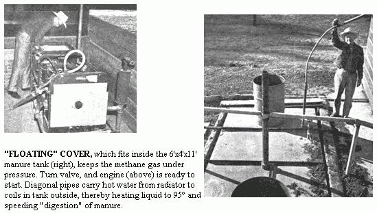

Reprinted by special permission from the May,1963 FARM JOURNAL,Inc.
Make electricity front hog manure? You're kidding!
No, honest . . . I've just visited a farm where they're doing it. The owner is Dr. George W. Groth, Jr., who maintains 1,000 hogs in confinement on his ranch in San Diego County, Calif.
They make the 10-kilowatt generator hum by capping a liquid manure pit - to trap the "sewer" gas - and tying it to a gas engine. "There's just about the right amount of electricity to pump our water and run the heat lamps for the baby pigs," says Dr. Groth.
As the system stands, Groth has right at $2,000 invested, including labor and the $800 he shelled out for a war-surplus generator. Converting the generator to "hog power" was simple. All it took was a natural gas carburetor plus a frill or two to increase efficiency.
For example, hot water from the engine's cooling system circulates through 300 feet of copper tubing coiled inside the liquid manure pit. It maintains a 90° to 100° temperature in the pit. "You get maximum 'digestion' of the manure at that temperature," says Groth. A small pump which runs off the fan belt pulley circulates the radiator water.
The two barrels you see sitting on the cover in the photo above are half-filled with water to hold the cover in place when the pit really becomes gassy. The inlet from the hog house to the 6,000-gallon tank is a 4-inch pipe which enters the pit about half way down one side. The outlet is oil the opposite side and lower than the inlet.
A complete digestion cycle takes about 20 days, but once under way, the process is continuous. The manure breaks down first into simple organic compounds such as acids and alcohols. Then, in the absence of air, it breaks down further into water, carbon dioxide and methane gas. With the generator idling alongside, the digestion process is punctuated with burps, gurgles and a foaming action like that with household detergents.
Besides the electricity, there are two obvious benefits: First, there are practically no flies; second, hardly any odor.
Although Dr. Groth's hog manure power plant pray be the first one in this country, the idea isn't brand new. Similar systems have been tried on such fuel-short continents as Asia and Africa.
What about bedding in the manure? "Straw slows the digestion process," answers Dr. Grout.
Other animal manures? He doesn't know.
As it stands, once-a-day cleaning of the hog house hasn't yet over-taxed his liquid manure pit.
In fact, the pit is surprisingly efficient.
"So little of the manure is left over that you wonder what happens to it," says Dr. Groth. END
|
 |
|
|